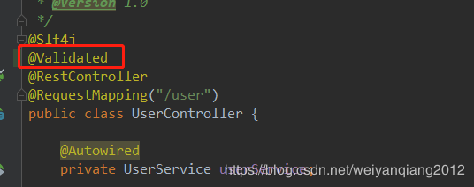
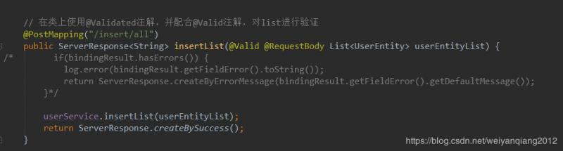
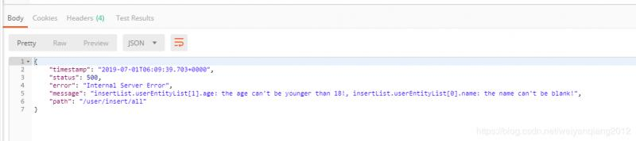
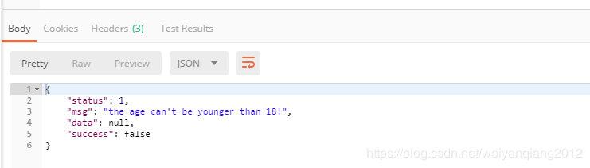
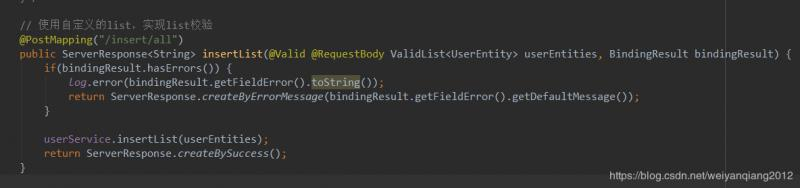

在Controller中校验方法参数时，使用@Valid和@Validated并无特殊差异（若不需要分组校验的话）:
@Valid：标准JSR-303规范的标记型注解，用来标记验证属性和方法返回值，进行级联和递归校验
@Validated：Spring的注解，是标准JSR-303的一个变种（补充），提供了一个分组功能，可以在入参验证时，根据不同的分组采用不同的验证机制
方法级别：
@Validated注解可以用于类级别，用于支持Spring进行方法级别的参数校验。@Valid可以用在属性级别约束，用来表示级联校验。
@Validated只能用在类、方法和参数上，而@Valid可用于方法、字段、构造器和参数上
1、校验参数
当入参为实体对象时，需要在方法上加@Valid或@Validated或者在参数前加@Valid或@Validated，或者在类上加@Validated
@Valid
@GetMapping("/exam-info")
public Boolean getInfo(User user){......}
@GetMapping("/exam-info")
public Boolean getInfo(@Valid User user){......}
@Validated
@GetMapping("/exam-info")
public Boolean getInfo(User user){......}
@GetMapping("/exam-info")
public Boolean getInfo(@Validated User user){......}
public Class User{
@NotNull（"id不能为空"）
private Integer id;
}
2、嵌套验证
@valid作用于属性上有嵌套验证作用，@validated不能作用于属性上,如下代码在User类的属性car上添加@valid注解，当传参id为空时会报错。
@GetMapping("/exam-info")
public Boolean getInfo(@Valid User user){.....}
public class User{
@Valid
@NotNull("car不能为空")
private Car car;
}
public class Car{
@NotNull("id不能为空")
private Integer id;
}
@Valid只能校验JavaBean，而List
既然List不是JavaBean，那我们就把它封装成JavaBean，我们定义一个ListWrapper类如下：
import lombok.Getter;
import lombok.Setter;
import javax.validation.Valid;
import java.util.ArrayList;
import java.util.List;
@Setter
@Getter
public class ListWrapper
@Valid
private List
public ListWrapper() {
list = new ArrayList<>();
}
public ListWrapper(List<E> list) {
this.list = list;
}}
同时修改一下controller对应的方法：
// 使用包装类对list进行验证
@PostMapping("/insert/all")
public ServerResponse<String> insertList(@Valid @RequestBody ListWrapper<UserEntity> listWrapper, BindingResult bindingResult) {
if(bindingResult.hasErrors()) {
log.error(bindingResult.getFieldError().toString());
return ServerResponse.createByErrorMessage(bindingResult.getFieldError().getDefaultMessage());
}
userService.insertList(listWrapper.getList());
return ServerResponse.createBySuccess();
}这样就可以对list进行校验了
注意：
由于对list进行了包装，如果我们传参的时候
[{},{}..]要改为{“list”: [{},{}..]}
在controller类上面增加@Validated注解，并且删除方法参数中的BindingResult bindingResult（因为这个参数已经没有用了，异常统一有controller返回了）


然后我们运行一下测试一下

可以看到可以对参数进行校验了，但还还有一个问题，那就是这个不是我们想要的返回格式，它controller自己返回的格式，所以我们需要做一个统一异常处理，代码如下：
import com.wyq.firstdemo.common.ServerResponse;
import lombok.extern.slf4j.Slf4j;
import org.springframework.web.bind.annotation.ExceptionHandler;
import org.springframework.web.bind.annotation.ResponseBody;
import org.springframework.web.bind.annotation.RestControllerAdvice;
import javax.validation.ConstraintViolation;
import javax.validation.ConstraintViolationException;
import java.util.Set;
@Slf4j
@RestControllerAdvice
public class ControllerExceptionHandler {
@ExceptionHandler
@ResponseBody
public ServerResponse<String> handle(ConstraintViolationException exception) {
log.error(String.valueOf(exception));
Set<ConstraintViolation<?>> violations = exception.getConstraintViolations();
StringBuilder builder = new StringBuilder();
for (ConstraintViolation violation : violations) {
builder.append(violation.getMessage());
break;
}
return ServerResponse.createByErrorMessage(builder.toString());
}}
经过统一异常处理，我们这边的返回结果就是我们想要的格式了

先上代码后说明，先定义一个ValidList
import javax.validation.Valid;
import java.util.*;
public class ValidList
@Valid
private List<E> list;
public ValidList() {
this.list = new ArrayList<>();
}
public ValidList(List<E> list) {
this.list = list;
}
public List<E> getList() {
return list;
}
public void setList(List<E> list) {
this.list = list;
}
@Override
public int size() {
return list.size();
}
@Override
public boolean isEmpty() {
return list.isEmpty();
}
...}
对比方法3和方法1，有没有觉得代码有点相似，新建一个类，并且让他实现List接口，使这个类即具有了JavaBean的特性，又具有了List的特性，比方法1简单优雅很多。
只需要把List换成ValidList就可以了，还不需要多统一异常处理。

参考：https://my.oschina.net/fangshixiang/blog/3081366
https://stackoverflow.com/questions/28150405/validation-of-a-list-of-objects-in-spring/36313615#36313615
https://my.oschina.net/fangshixiang/blog/3081366
本文由博客一文多发平台 OpenWrite 发布！